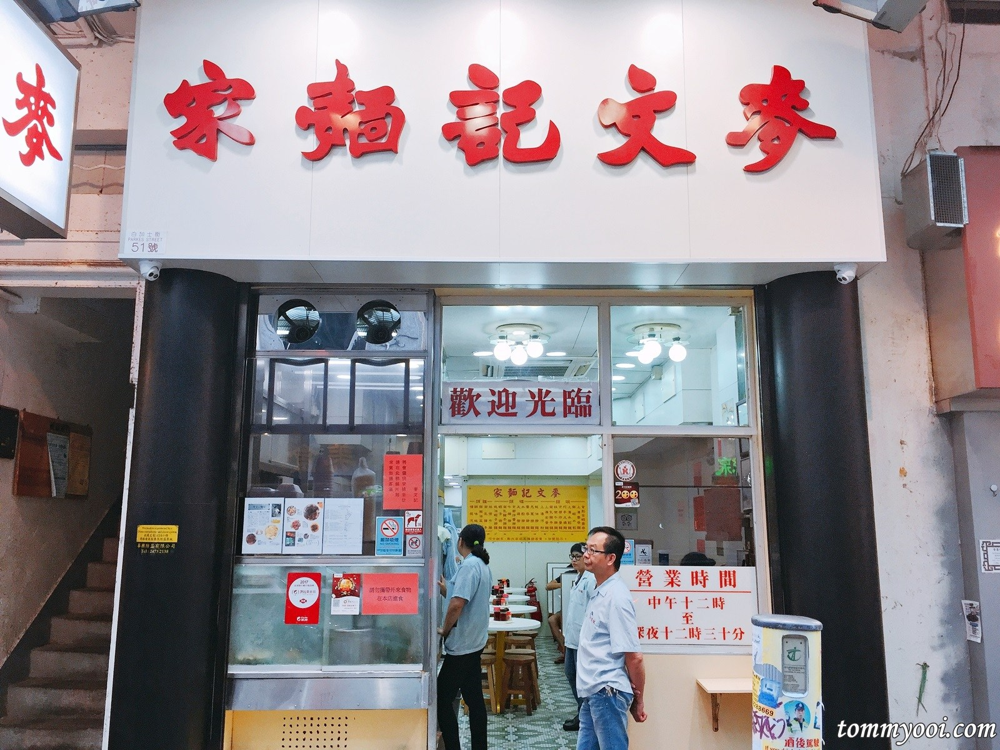

About Hong kong
Hong Kong is an autonomous territory, and former British colony, in southeastern China. Its vibrant, densely populated urban centre is a major port and global financial hub with a skyscraper-studded skyline. Central (the business district) features architectural landmarks like I.M. Pei’s Bank of China Tower. Hong Kong is also a major shopping destination, famed for bespoke tailors and Temple Street Night Market.THINGS TO DO IN HONG KONG
PLACES TO EAT IN HONG KONG
Tai Cheong Bakery (泰昌餅家)

Kau Kee Beef Brisket (九记牛腩)
Address : 21 Gough Street, Central
地址 ：中環歌賦街21號
Opening Hours : Mon to Sun 12.30pm – 10.30pm (Closed on Sunday)
地址 ：中環歌賦街21號
Opening Hours : Mon to Sun 12.30pm – 10.30pm (Closed on Sunday)
Kam's Toast Goose (甘牌燒鵝)
Address : 226 Ground Floor, Po Wah Commercial Centre, Hennessy Rd, Wan Chai, Hong Kong
Opening Hours : Daily 11.30am to 9.30pm
Opening Hours : Daily 11.30am to 9.30pm
Australian Dairy Company (澳洲牛奶公司)
Address : 47 Parkes Street, Jordan
地址 ：佐敦白加士街47號地下
Opening Hours : Friday to Wed 7.30am – 11.00pm (Closed on Thursday)
地址 ：佐敦白加士街47號地下
Opening Hours : Friday to Wed 7.30am – 11.00pm (Closed on Thursday)
Tim Ho Wan (添好运)
Address :
1. Sam Shui Po Main- G/F, 9-11 Fuk Wing Street, Hong Kong
2. Central Branch – Shop 12A, Hong Kong Station Podium Level 1, IFC Mall , Central, Hong Kong
Opening Hours : Daily 10am to 10pm
1. Sam Shui Po Main- G/F, 9-11 Fuk Wing Street, Hong Kong
2. Central Branch – Shop 12A, Hong Kong Station Podium Level 1, IFC Mall , Central, Hong Kong
Opening Hours : Daily 10am to 10pm

Mak Man Kee Wanton (麥文記麵家)
Address : 51 Parkes St, Jordan, Hong Kong
Opening Hours : Daily 12pm to 12am
Opening Hours : Daily 12pm to 12am
Kam Wah Cafe (金華冰廳)
Yee Shun Dairy (義順牛奶公司)
Address :
1. 513 Nathan Road, Hong Kong
油麻地彌敦道513號地下
2. 506 Lockhart Road, Causeway Bay
銅鑼灣駱克道506號
Opening Hours : Daily 12.00pm to 12.00am
1. 513 Nathan Road, Hong Kong
油麻地彌敦道513號地下
2. 506 Lockhart Road, Causeway Bay
銅鑼灣駱克道506號
Opening Hours : Daily 12.00pm to 12.00am
Lee Keung Kee North Point Eggette
(利强记北角鸡蛋仔)
(利强记北角鸡蛋仔)